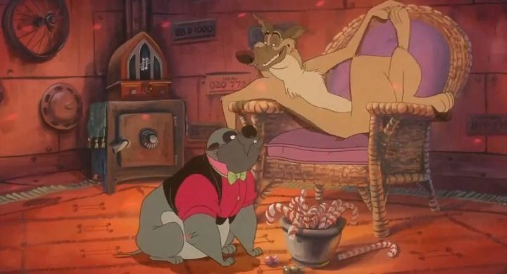

Of the "classic" movies by Don Bluth (not including some of the lesser-known box office bombs), I think "All Dogs Go To Heaven" might be my favourite. I don't think I watched it until I was an adult, as I instead grew up on the sequels ("2" and "An All Dogs Christmas Carol"), each made without Bluth's involvement. And honestly, the simpler stories and characterizations, and improved character designs, make me prefer those, especially as a kid (strangely, I had the exact experience with "An American Tail"). But there's a lot to appreciate with the original film as an adult, not the least of which to say this is a gangster movie that happens to star cartoon dogs. Yep, a gangter movie in the style of 50's musicals. Starring dogs. It opens with Charlie getting busted out of jail by his best friend and sidekick Itchy, and heading back to an undergound gambling joint that Charlie and Carface ran together. But Charlie didn't know it was Carface that framed him to get him out of the picture, and he tries again to send him sleeping with the fishes. It works, and Charlie dies, finding himself in Heaven (regardless of his crimes, all dogs go to Heaven!). But he has no intention of staying dead, and upon winding a stopped pocket watch, he's able to cheat death and come back, as long as the watch keeps ticking. Naturally, he gets back to Itchy and starts plotting his revenge against Carface. ... which involves a sweet orphan named Anne-Marie. A shame, since it was already a fun movie for adults without the kid, but it needed some hook to bring in children and families. Anne-Marie has a special gift to talk to animals, and Charlie uses her to rig animal races to fund his own business, but needs to keep her happy and promises to find her a family. Naturally, Charlie slowly comes around to being a good dog with Anne's influence, giving him one last chance to make things right before he moves permanently to the afterlife. It's fairly complex for an animated movie, and is easier to appreciate as an adult, although it didn't seem like the type of movie that would keep my attention as an adult. It's also surprisingly dark between the jokes, with Carface being rather ruthless in his methods, and a disturbing vision of what dog-Hell might look like. Those themes of life and death are probably what make the movie stand out to this day. It's kinda beautiful, and easy to imagine as a classic movie, not just a classic cartoon.  But that darkness is at odds with this being a family movie. That's also true with Don Bluth's animation, which worked great for dinosaurs, mice and penguins, but is a little uncanny with the more detailed dogs here. Not to mention Anne-Marie (and later, some puppies) are almost offensively cute, the sort of thing that would please five-year-olds, which seems far too young for the rest of the movie. And again, I think the simplified animal designs in the sequels and spin-offs were better. This is a minor gripe, as the movie's animation and backgrounds are otherwise quite lovely. The voice acting is also pretty solid, capturing that wise-cracking gangster tone while keeping the more cartoonish characteristics of some of the side characters. Being set in New Orleans, the music gets some good moments, but this is a musical (which I didn't remember at all), and most of the songs are duds. I have a lot of minor issues with "All Dogs Go To Heaven," many of which are coloured by my personal experience of seeing the spin-off material first. It's one of hte more clever concepts and ambitious animated movies I've seen out of the USA, and is probably the most interesting from Don Bluth's work. I don't know that there's a rewatchability to it, but it's definitely worth watching at least once, if you haven't seen it already.
- "Ani" More reviews can be found at : https://2danicritic.github.io/ Previous review: review_Alien_Nine Next review: review_Amagi_Brilliant_Park